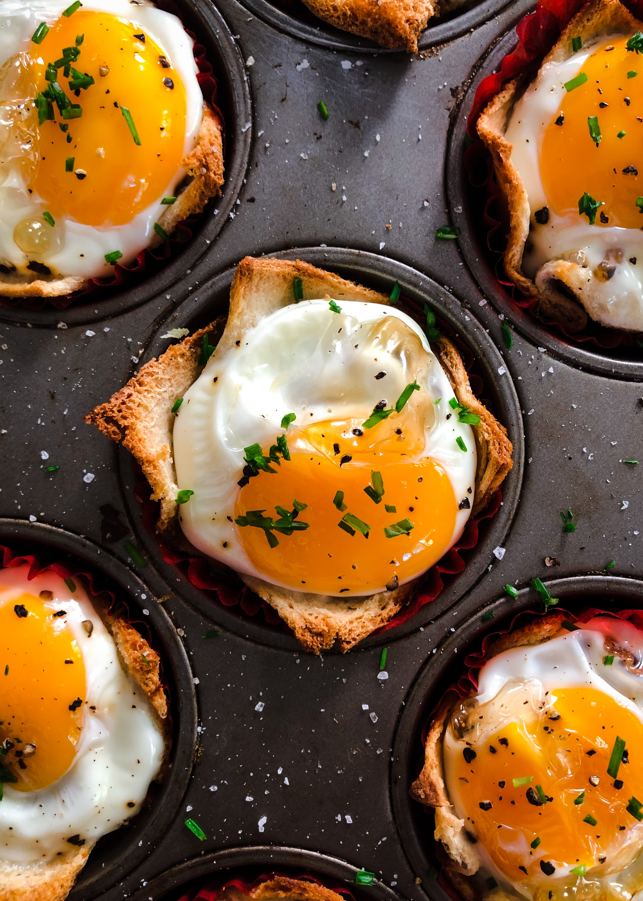

<-Eggs Speedrun->

What we want
To make an already easy-to-make meal even easier to make
What we buy
- Microwave egg poacher
- Eggs themselves
What we do
- Crack eggs open into your poacher
- Microwave it (be careful, it might explode on you!)
- GG. No need to use stove, clean a pan afterwards or do anything really